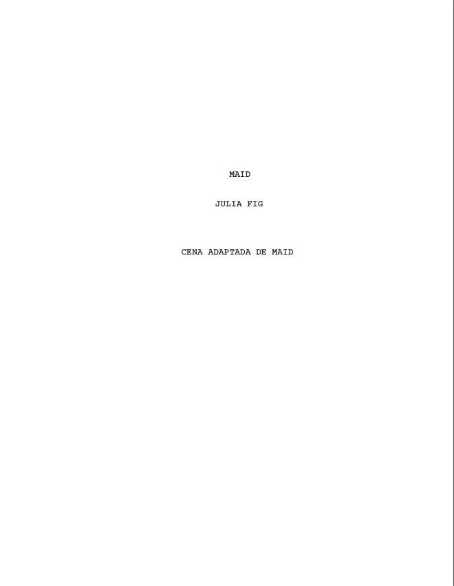

Logline
Apresente a história em uma ou duas frases, destacando protagonista, objetivo e conflito.
Roteiro · 2024
Adicione aqui uma logline curta que apresente o conflito central do roteiro.

Desenvolvimento
Apresente a história em uma ou duas frases, destacando protagonista, objetivo e conflito.
Rosa não quer aceitar que está em um ciclo vicioso com o seu ex, mas, uma noite, quando ela chega em casa muito tarde, Peter a confronta sobre.
Conte como nasceu a ideia, quais foram as referências e como o texto se desenvolveu.
Liste os assuntos e questões centrais explorados pelo roteiro.
Página selecionada
PETER
O que você vê nesse cara que você não
vê em mim? Porque você continua
voltando pra ele quando eu faço de
tudo, absolutamente tudo, pra te
deixar confortavel e feliz? Porque
você vai voltar de novo para ele?
Peter para e encara Rosa.
ROSA
Eu não vou voltar para ele.
PETER
Vai sim
ROSA
Não, não vou.